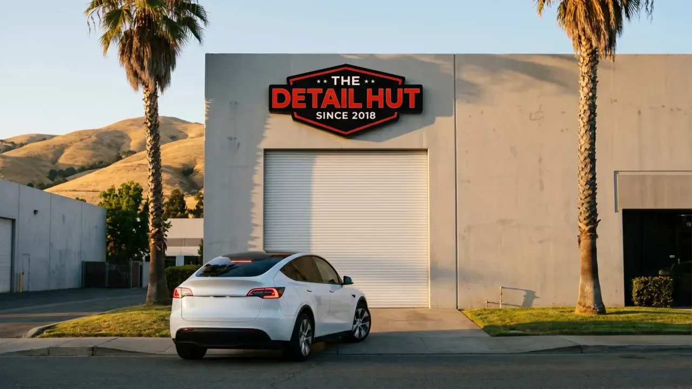
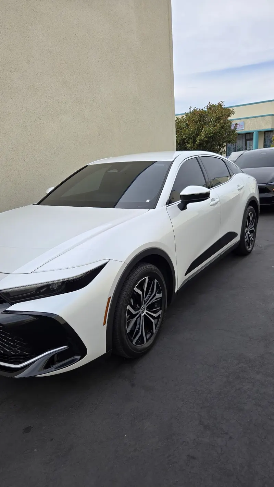
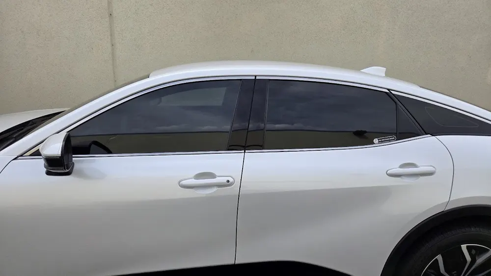
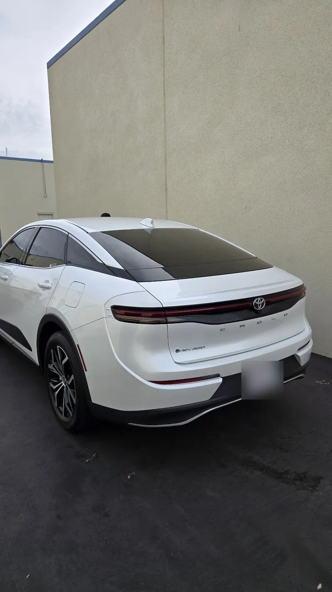
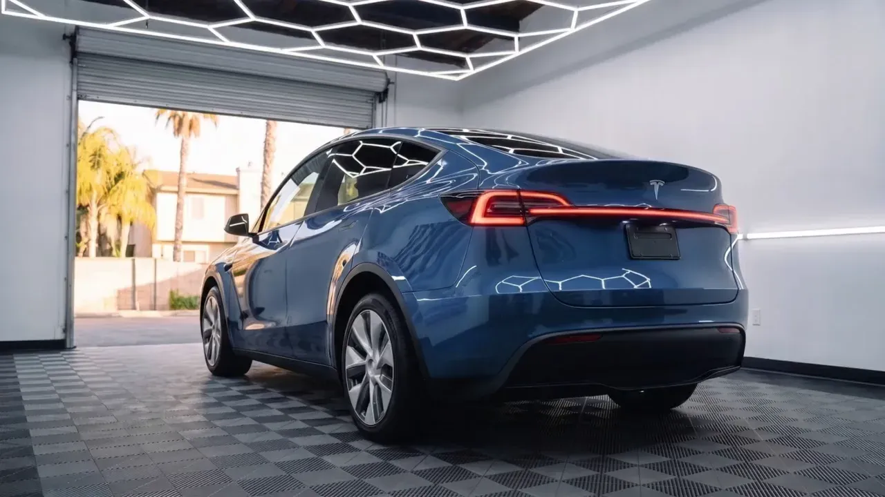

Rejects infrared heat
Ceramic particles help block the infrared heat you feel through the glass, so the cabin stays more comfortable on hot Bay Area days.

(Side Windows + Rear Windshield)
Ceramic tint targets heat, not just light. The ceramic layer helps keep your cabin cooler, blocks UV and cuts glare, with a clear view out and no metal to block your phone or GPS. Installed at our Clipper Ct shop, open daily 9 am – 6 pm.
Confirm your vehicle, shade and final price with the team before booking. Front windshield is not part of this offer.
Regular dyed tint mostly darkens your glass. Ceramic film is built differently: a metal-free ceramic layer that targets infrared heat and UV. From the 880 commute to all-day parking in the sun, your car stays cooler without the cave-dark look.
Ceramic particles help block the infrared heat you feel through the glass, so the cabin stays more comfortable on hot Bay Area days.
Helps block the UV rays that age your skin and fade and crack your seats, dash and trim.
Cuts harsh sun and glare while keeping a crisp, clear view out, day and night.
No metal in the film, so it won’t block your phone, GPS, radio or Bluetooth key.
Performance depends on the film, shade and existing glass. Ask the team for the specs of your film. Front windshield coverage is not part of this offer.

The Detail Hut installs ceramic window tint on everything from daily drivers to Teslas and luxury cars. The same team also handles wraps, PPF and ceramic coating, so careful prep and premium film go into every job.
Ceramic tint made simple: get a clear quote, pick your shade, and let the team handle a clean install with tucked edges.
Find my ceramic tintKnow exactly what you’re getting before you book. The team will walk you through the film, shade, coverage and price for your car.
Side windows and rear windshield in ceramic film. Your exact price is confirmed before install.
A ceramic-particle film that helps reject heat and UV without relying on a dark dye. Ask for the exact film and its specs with your quote.
Ceramic doesn’t need to be dark to work. Pick a shade for looks and privacy, and talk through what’s legal for each window in California.
Glass prep, careful fitting and tucked edges for a finish customers call “flawless” in their reviews.
Visit us at 4021 Clipper Ct, Fremont, CA 94538. Open daily, 9 am – 6 pm. Ask about timing for your car.
Ask about old-film removal, aftercare and warranty for your film, so you know what to expect.
A Toyota Crown with ceramic tint from The Detail Hut, shared by the owner in a Google review, plus a Model Y from the shop’s own studio.




Real reviews from The Detail Hut’s Google listing.
Read all reviews on Google ↗“I brought my Toyota Crown in for window tinting, and they did an incredible job. The tint came out absolutely perfect - clean, professional, and exactly how I wanted it.”View on Google ↗
“I recently had my 2026 Tesla Model 3 tinted at The Detail Hut… The tint came out flawless, and the overall experience was smooth from start to finish.”View on Google ↗
“…tint on all windows… the tint looks sharp all around. Thanks to George for walking me through the options and keeping me updated throughout.”View on Google ↗
“The window tint adds both privacy and heat rejection, which is especially valuable for daily driving and outdoor parking.”View on Google ↗
“I got my Tesla … wrapped and tinted at detail hut did a great job. You cannot beat the price and it would be hard to get better service.”View on Google ↗
“I found the [Detail] Hut on Facebook to get my windows tinted. I had a great experience with the service and the staff. They were very friendly and helpful.”View on Google ↗
Ask about old-film removal, any extra charges, install time and warranty before booking.
A few details. A clear quote for your car.
Ceramic tint on your side windows and rear windshield for $299. The front windshield is not part of this offer. Confirm your exact price, the windows included and the film with the team before booking.
Ceramic tint uses a layer of tiny ceramic particles to help block heat and UV coming through your windows. Ask The Detail Hut for the exact film and its specs when you get your quote.
Regular dyed tint mostly works by darkening the glass. Ceramic film uses metal-free ceramic particles that target infrared heat and UV, so it can help keep the car cooler without going darker, and keeps a clear view out.
No. Because the ceramic layer targets infrared heat, a lighter shade can still help cut the heat you feel. Choose your shade for looks and privacy, and the team will go over California’s rules for each window.
Ceramic film has no metal in it, so it won’t block phone, GPS, radio or Bluetooth signals the way metallic films can.
It depends on your car and whether old film needs removing. Confirm the drop-off time and pickup when you book.
Tell the team about any existing film when you ask for a quote. They’ll let you know if removal is needed and whether there’s an extra charge.
Ask for the warranty terms for your ceramic film and install. The team will also explain curing time, when you can roll your windows down and how to clean the film.
The Detail Hut is at 4021 Clipper Ct, Fremont, CA 94538. We’re open daily, 9 am – 6 pm. Get directions on Google Maps, and check the shop’s Google listing for holiday hours before you visit.
Full vehicle ceramic tint. Side windows + rear windshield.